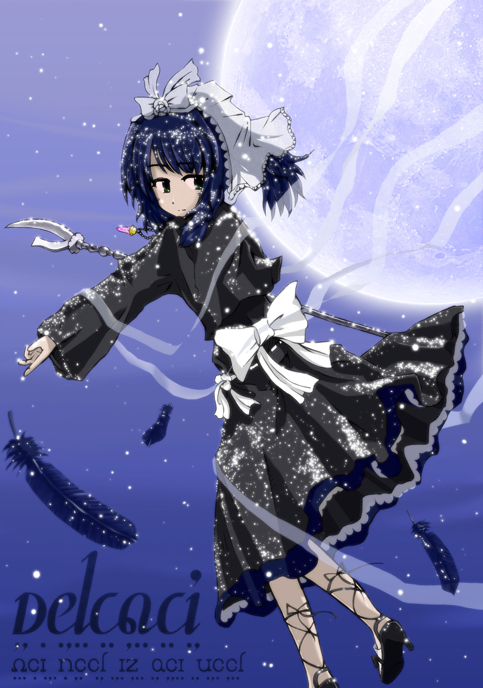

|
유메오리
전문 아르카로 된 라이트노벨 소설입니다.
무대는 현대 아르바자드이며, 사신의 소녀 사에(紗枝)가 ‘꿈을 먹는 자’라 불리는 사신들과 싸움을 벌입니다.
‘꿈을 먹는 자’는 사람을 절망에 빠뜨려서 그 영혼을 먹는 사신입니다.
사에는 유메오리(夢織)라는 종으로, 영혼을 빼앗는 대신 상대방을 행복한 꿈의 세계로 인도하는 능력을 가지고 있습니다.
한 단어씩 사전을 찾는 수고를 덜기 위해 본문 중의 단어를 클릭하면 환일사전으로 갈 수 있도록 되어 있습니다.
브라우저에서 보지 마시고 pdf를 다운로드한 다음 Adobe Reader 등으로 읽으십시오.

Art by nias avelantis
“따뜻한 거짓말과 차가운 진실. 당신은 어느 쪽을 원해……?”
사신의 소녀 사에. 그녀가 하는 일은 꿈을 빼앗긴 슬픈 사람에게 따뜻한 거짓말을 선사하는 것.
첫눈과 어두운 달과 사신의 낫. 사에는 누구를 위하여 꿈을 엮는가.
공개일 : 2010년 10월 19일
초판 : 2007년 10월
|